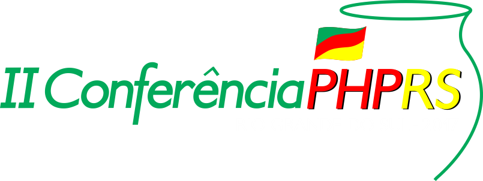

Um evento para a comunidade de Desenvolvedores PHP do Rio Grande do Sul, voltado para o crescimento profissional, troca de experiências e networking. Fortalecendo a linguagem e o mercado de trabalho.
Duração: 3 horas
Sala: à confirmar
Alguns tópicos que serão vistos neste workshop:
Segurança em uma casca de noz
Neste workshop trabalharemos com os 4 pontos mais importantes na segurança de uma aplicação:
Duração: 3 horas
Sala: à confirmar
Com o padrão PSR-7 podemos desenvolver projetos mais flexíveis e escaláveis, podendo reusar código escrito por vários frameworks e equipes. Neste workshop vamos implementar exemplos usando o micro framework Zend Expressive e outros componentes.
Duração: 20 min
Apresentação dos palestrantes e Abertura do evento
Nesta palestra vamos conversar sobre novas metodologias ágeis que estão sendo usadas por empresas como Paypal e Gitlab.
Será abordada a experiência de utilização da API pthreads do PHP (http://php.net/manual/en/intro.pthreads.php), citando desde o processo de instalação e configuração do ambiente (no qual usei Docker) até a implementação de programas concorrentes utilizando suas funcionalidades. Algumas das dificuldades que passei durante o processo de aprendizado e utilização, e como fiz para contorná-los. Uma das minhas motivações é o fato dessa API não ser muito conhecida ou divulgada (até mesmo em inglês, o conteúdo sobre ela é escasso), apesar de trazer diversos recursos interessantes.
Duração: 30 min
Nessa palestra será abordado o motivo pelo qual devemos usar Framework, evolução dos Frameworks, como analisar qual melhor para sua aplicação, vantagens e desavantagens de usar Framework e compartilhar Case reais.
A cultura DevOps está aí... mais forte do que nunca. Hoje o desafio é buscar ferramentas para monitorar nossas aplicações web, tendo uma visão completa tanto do host quanto dos containers. Nessa palestra apresento a vocês o Prometheus, ferramenta com excelente desempenho! Como configurar e como integrar com a sua aplicação.
Duração: 1h 30min
Duração: 20 min
Todos os dias, diversas de pessoas ao redor do mundo começam a programar em PHP. É uma linguagem fácil de ser aprendida e, por isso, pode fazer com que desenvolvedores despreparados criem sistemas vulneráveis. O objetivo dessa palestra é apresentar as principais vulnerabilidades de aplicações PHP e a maneira de contorná-las. Serão mostradas também técnicas de programação defensiva, resposta a incidentes, prevenção de perdas e outros tópicos relevantes à segurança da informação. Princípios de segurança, técnicas de invasão e defesa, identificação e prevenção de ataques, boas práticas e proteção do usuário fazem parte dos assuntos abordados nessa palestra.
Microserviços estão aí no hype, a idéia de criar serviços pequenos e independentes existe há alguns anos mas ao longo dos anos muitas implementações viraram no que chamamos de “monolitos distribuído”. Um monolito distribuído é um sistema decomposto em várias partes distribuídas porém altamente acopladas, fazendo com que se torne muito difícil fazer alterações isoladas sem exigir alterar outras partes do sistema. Vou nessa talk conversar sobre formas de evitar que isso aconteça.
Nesta palestra veremos um pouco de tudo, uma apresentação da importância de se fazer testes, testes unitários, testes funcionais, pirâmide de testes, como fazer com que os testes se tornem uma documentação viva de um sistema, como escrever testes com gherkin, a ferramenta behat para escrita de testes funcionais e uma pincelada rápida sobre CI, CD e como implementar a cultura de testes em ambientes hostis a testes.
Será visto o melhor que o deployer tem que é: Instalação simplificada ? Criando suas tasks Conectando e separando seus servidores Identificar configuração com Environment Funções que o deployer oferece.
Quanto mais complexa é uma aplicação, mais complexo é o seu deploy, certo? Não necessariamente. É possível reduzir os riscos, ou até mesmo excluí-los, se você estiver utilizando as ferramentas certas para isso. Neste apresentação, queremos mostrar um pouco sobre a evolução do Docker e como ele foi se tornando parte importante no processo de deploy sem downtime. Para isso, demonstraremos, na prática, em uma aplicação PHP, como funciona esse processo - e ainda aproveitaremos para brincar.
Duração: 40 min
Como usuários de código livre, muitas vezes consumimos muito conteúdo produzido pela comunidade, mas, o que damos em troca? E em que dar algo em troca para a comunidade pode ser benéfico para nossa carreira? Nessa palestra você vai entender como ajudar a comunidade e como crescer como profissional de desenvolvimento.
Sorteios e agradecimentos.